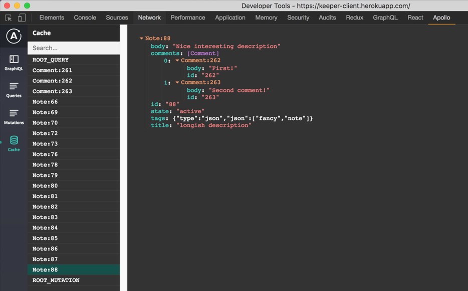

Fullstack Intro to GraphQL based on example application

+

+

GraphQL on Front-end - what's wrong with REST?
| GraphQL | REST |
|---|---|
| One endpoint to access whole API | Many endpoints with different schema |
| Retrieve only the data your client needs in a single request (flexibility) | Over/under fetching data due to REST nature |
| Whole API is documented and easily accessible ( Insomia, GraphiQL) | We might have documentation ( documentation is not integrated into editor, often only public API is documented ) |
How does query looks like?
Code sample - GraphQL vs REST - Overfetching
const rawResponse = await fetch('root/notes')
const response = await rawResponse.json()
{
"notes": [
{
"id": "76",
"title": "Pickup milk from home",
"body": "I need this milk ASAP",
"comments": [
{
"id": "261",
"body": "Remember to pick up keys!"
},
...lot of other comments which we don't want
]
}
]
}
const rawResponse = await fetch('root/graphql', {
method: 'POST',
headers: { 'Content-type': 'application/json' },
body: JSON.stringify({ query:`
{
notes {
id
title
}
}
`})
})
{
"data": {
"notes": [
{
"id": "76",
"title": "Pickup milk from home"
},
...
]
}
}
Code sample - GraphQL vs REST - but let's fetch more data - underfetching :)
/** Get list of movies */
const rawResponseMovies = await fetch('root/movies')
const responseMovies = await rawResponseMovies.json()
... parsing data
/** Get list of actors for movies */
const rawResponseActors = await fetch('root/cast')
const responseActors = await rawResponseActors.json()
... parsing data
/** Get list of planets for actors */
const rawResponseComics = await fetch('root/planets')
const responseComics = await rawResponseComics.json()
... merging data
await fetch('root/graphql', {
...
body: JSON.stringify({ query:`
{
allFilms {
films {
title
characterConnection {
characters {
name
homeworld {
name
population
terrains
}
}
}
}
}
}
`})
})
{
"data": {
"allFilms": {
"films": [
{
"title": "A New Hope",
"characterConnection": {
"characters": [
{
"name": "Luke Skywalker",
"homeworld": {
"name": "Tatooine",
"population": 200000,
"terrains": [
"desert"
]
}
},
{
"name": "C-3PO",
"homeworld": {
"name": "Tatooine",
"population": 200000,
"terrains": [
"desert"
]
}
}
]
}
}
}
}
}
GraphQL is not only fetching - Mutations
mutation {
addNote(title: "...", body: "...") {
id
title
}
}
{
"data": {
"addNote": {
"id": "91",
"title": "Pick up milk!",
"body": "Don't forget this time"
}
}
}
Fragments - let's make our life easier
fragment NOTE_FIELDS on Note {
id
state
title
body
comments {
id
body
}
tags
}
Mutation can have variables!
mutation ADD_NOTE($title: String!, $body: String) {
addNote(title: $title, body: $body) {
...NOTE_FIELDS
}
}
How to start with GraphQL?
https://www.howtographql.com/
GraphQL clients:
- No client
- Apollo client (Meteor)
- Relay (Facebook)
Developer tools
- Insomia
- GraphiQL
- Apollo client chrome extension
GraphQL clients:
- No client
- Apollo client (Meteor)
- Relay (Facebook)
Developer tools
- Insomia
- GraphiQL
- Apollo client chrome extension
Apollo client - let's fetch data!
query GET_NOTES(
$title: String
$tags: [String]
$state: String
) {
noteSearch(
title: $title,
tags: $tags,
state: $state
) {
id
state
title
body
comments {
id
body
}
tags
}
}
<Query query={GET_NOTES} variables={{ title: filterByTitle, state: filterByState }}>
{
({ data: { noteSearch }, loading, error }) => {
return (
<NotesBoard
isLoading={isLoading || loading}
toggleModal={this.toggleModal}
onNoteClick={this.onNoteClick}
onNoteRemove={this.onNoteRemove}
isModalVisible={isModalVisible}
noteID={noteID}
notesList={noteSearch}
/>
)
}
}
</Query>
Apollo client - let's send data!
fragment NOTE_FIELDS on Note {
id
state
title
body
comments {
id
body
}
tags
}
#import "./Note.fragment.gql"
mutation ADD_NOTE($title: String!, $body: String) {
addNote(title: $title, body: $body) {
...NOTE_FIELDS
}
}
onAddNoteModalSubmit = async ({ title, body }) => {
const { addNote } = this.props;
await addNote({
variables: {
title,
body
},
/**
* Direct access to cache in order to update existing Notes without refetching existing notes
*/
update: (store, { data: { addNote } }) => {
const cachedData = store.readQuery({ query: GET_NOTES });
cachedData.notes = cachedData.notes.concat([addNote]);
store.writeQuery({ query: GET_NOTES, data: cachedData });
}
});
};
export default compose(graphql(ADD_NOTE, { name: 'addNote' }))(AddNoteContainer);
Apollo client - cache
Sorry for the long presentation. Here is a potato